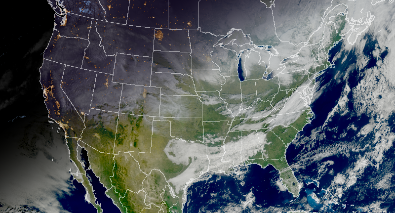

import ee
import geemap
from IPython.display import Image, display, Markdown
from pathlib import Path
from urllib.request import urlopen
import os
import math
def save_image(url: str, filename: str) -> Path:
"""Download an EE thumb URL to a local PNG so the post can embed it."""
dest = Path(filename)
with urlopen(url) as response, open(dest, "wb") as fp:
fp.write(response.read())
return dest
# Prefer env var; readers can also hardcode directly if preferred.
PROJECT_ID = os.environ.get("EE_PROJECT_ID", "YOUR_PROJECT_ID")
ee.Initialize(project=PROJECT_ID)Replicating GOES GeoColor in Earth Engine: A Winter Solstice Showcase
Earth Engine
GOES
Remote Sensing
Python
Data-driven stories and practical notes on Earth Engine, geospatial analysis, and remote sensing.
Keywords
Earth Engine, Geospatial Analysis, Python, Google Cloud, Remote Sensing, Raster Data, Datasets
December 21st marked the winter solstice—the shortest day of the year in the Northern Hemisphere. With 15 hours of darkness across much of the U.S., it’s the perfect time to showcase the GOES GeoColor visualization: seamless transitions from sunlit landscapes to city lights and cloud illumination at night.
A few years ago, I wrote about working with GOES data in Earth Engine. Since then, the constellation has evolved: GOES-16 and GOES-17 have been replaced by GOES-18 (West, ~137°W) and GOES-19 (East, ~75°W).
This post revisits GOES and shows how to replicate CIRA/NOAA’s stunning GeoColor product using Earth Engine’s Python API. We’ll use it to animate 24 hours across the solstice to watch the contiguous United States transition from night to day and back again.
What is GOES?
GOES (Geostationary Operational Environmental Satellite) is a series of weather satellites operated by NOAA and NASA that provide continuous monitoring of Earth’s western hemisphere from a fixed position in geostationary orbit, delivering data for storm tracking, weather forecasting, and climate research. The imaging cadence is between 30 seconds and 10 minutes, depending on the data product. Earth Engine ingests images as soon as they are available, with latency under an hour. Earth Engine offers the Cloud and Moisture Imagery (CMI) and Fire/Hotspot Characterization (FHS) products.
What is GeoColor?
GeoColor is a composite visualization developed by CIRA (Cooperative Institute for Research in the Atmosphere) that blends true-color daytime imagery with infrared cloud data and nighttime enhancements including city lights and terrain shading. The result is a single, continuous view that works equally well at noon and midnight.
Key components:
- Daytime: Solar-corrected true color with synthetic green band
- Nighttime: City lights from VIIRS, terrain shading from ETOPO1, and IR cloud overlay
- Transition: Smooth blending based on solar zenith angle
Let’s recreate GeoColor in Earth Engine using an approximation of the Miller et al., 2020 methods.
Setup
The examples below run on a Jupyter kernel with Python 3.10+, earthengine-api and geemap installed. Set EE_PROJECT_ID in your environment or edit PROJECT_ID below to your Earth Engine project before running.
Step 1: Configuration and Utilities
We’ll start by defining satellite positions and border overlays, then create a utility for applying scale factors from GOES image metadata. Note that we’re including GOES 16 and 17, in case you’re doing historical analysis.
# Satellite longitude positions.
GOES_LONGITUDES = {
'16': -75, # East (retired)
'17': -137, # West (retired)
'18': -137, # West (operational)
'19': -75 # East (operational)
}
# Border overlay using global administrative boundaries.
BORDERS_FC = ee.FeatureCollection('WM/geoLab/geoBoundaries/600/ADM1')
BORDER_IMAGE = ee.Image().byte().paint(BORDERS_FC, 1, 1).visualize(
palette=['ffffff'], opacity=0.6
)
def apply_scale_factors(image):
"""Apply band-specific scale and offset from image properties."""
bands = image.bandNames()
props = image.toDictionary()
def scale_band(band_name):
band_str = ee.String(band_name)
scale = ee.Number(props.get(band_str.cat('_scale'), 1.0))
offset = ee.Number(props.get(band_str.cat('_offset'), 0.0))
return image.select([band_str]).multiply(scale).add(offset).rename([band_str])
scaled = ee.ImageCollection.fromImages(bands.map(scale_band)).toBands()
return ee.Image(scaled.rename(bands)
.copyProperties(image, image.propertyNames())
.set('system:time_start', image.get('system:time_start')))Step 2: Geometry Calculations
GeoColor requires two angle calculations: solar zenith (for day/night blending) and satellite zenith (for atmospheric correction).
def calculate_sun_zenith(image):
"""Calculate cosine of solar zenith angle for each pixel."""
time_ms = image.date().millis()
year_start = ee.Date.fromYMD(image.date().get('year'), 1, 1).millis()
days_since_start = ee.Number(time_ms).subtract(year_start).divide(24 * 60 * 60 * 1000)
# Solar declination
fractional_year = days_since_start.multiply(2 * math.pi / 365.25)
declination = fractional_year.subtract(1.39).sin().multiply(0.4091)
# Solar time
seconds_in_day = 86400
mod_time = ee.Number(time_ms).mod(seconds_in_day * 1000).divide(1000)
utc_hour = mod_time.divide(3600)
lat_lon = ee.Image.pixelLonLat()
lat = lat_lon.select('latitude').multiply(math.pi / 180)
lon = lat_lon.select('longitude')
solar_time = lon.divide(15).add(utc_hour)
hour_angle = solar_time.subtract(12).multiply(15).multiply(math.pi / 180)
# Cosine of solar zenith angle
cos_sza = lat.sin().multiply(declination.sin()) \
.add(lat.cos().multiply(declination.cos()).multiply(hour_angle.cos()))
return cos_sza
def calculate_sat_zenith_and_air_mass(image, sat_lon):
"""Calculate satellite viewing angle and atmospheric path length."""
re = 6378.137 # Earth radius (km)
h = 42164.16 # Geostationary orbit height (km)
r_ratio = re / h
lat_lon = ee.Image.pixelLonLat()
lat = lat_lon.select('latitude').multiply(math.pi / 180)
lon = lat_lon.select('longitude').multiply(math.pi / 180)
sat_lon_rad = ee.Number(sat_lon).multiply(math.pi / 180)
lon_diff = lon.subtract(sat_lon_rad)
cos_beta = lat.cos().multiply(lon_diff.cos())
numerator = cos_beta.subtract(r_ratio)
denominator = ee.Image(1.0).add(r_ratio**2) \
.subtract(ee.Image(2 * r_ratio).multiply(cos_beta)).sqrt()
cos_sat_zenith = numerator.divide(denominator).clamp(-1, 1)
air_mass = ee.Image(1.0).divide(cos_sat_zenith).clamp(1.0, 6.0)
sat_zenith_deg = cos_sat_zenith.acos().multiply(180 / math.pi)
return sat_zenith_deg, air_massStep 3: Daytime True Color
The daytime layer uses GOES bands 1-3 (blue, red, vegetation red edge) to create a synthetic green band, then applies atmospheric haze correction and solar-aware gamma stretching.
def get_daytime_layer(image, sat_lon, cos_sun):
"""Generate corrected true-color RGB for daytime."""
img = apply_scale_factors(image)
sat_zenith_deg, air_mass = calculate_sat_zenith_and_air_mass(img, sat_lon)
# Cloud-modulated haze correction.
ir_temp = img.select('CMI_C13')
cloud_mod = ir_temp.subtract(233).divide(283 - 233).clamp(0.3, 1.0)
b_haze = air_mass.multiply(0.045).add(0.015).multiply(cloud_mod)
r_haze = air_mass.multiply(0.022).add(0.005).multiply(cloud_mod)
v_haze = air_mass.multiply(0.008).add(0.002).multiply(cloud_mod)
b = img.select('CMI_C01').max(0).clamp(0, 1.3).subtract(b_haze).max(0)
r = img.select('CMI_C02').max(0).clamp(0, 1.3).subtract(r_haze).max(0)
v = img.select('CMI_C03').max(0).clamp(0, 1.3).subtract(v_haze).max(0)
# Synthetic green band.
g_syn = r.multiply(0.45).add(b.multiply(0.45)).add(v.multiply(0.10))
g_hybrid = g_syn.multiply(0.93).add(v.multiply(0.07))
def apply_log_stretch(img):
clamped = img.clamp(0.01, 1.1)
logged = clamped.log().divide(math.log(10))
min_log = math.log10(0.01)
max_log = math.log10(1.1)
normalized = logged.subtract(min_log).divide(max_log - min_log)
# Limb correction (darker at edges).
sza_clamped = sat_zenith_deg.clamp(0, 80)
gamma_sat = ee.Image(0.85).add(ee.Image(0.15).multiply(sza_clamped.divide(80)))
# Sunset boost (brighter near terminator).
solar_boost = ee.Image(1.0).subtract(cos_sun.clamp(0.1, 1.0)).multiply(0.25)
gamma_final = gamma_sat.subtract(solar_boost).max(0.65)
return normalized.pow(gamma_final)
r_final = apply_log_stretch(r)
g_final = apply_log_stretch(g_hybrid)
b_final = apply_log_stretch(b)
return ee.Image.cat([r_final, g_final, b_final]).rename(['red', 'green', 'blue'])Step 4: Nighttime Enhancement
The nighttime layer combines VIIRS city lights, terrain-shaded elevation, and infrared cloud imagery. This is where GeoColor really shines—literally. Note that the night lights layer is the 2024 median of the VIIRS VCMSLCFG product.
# Static nighttime assets.
CITY_LIGHTS = ee.ImageCollection("NOAA/VIIRS/DNB/MONTHLY_V1/VCMSLCFG") \
.filterDate('2024-01-01', '2025-01-01').select('avg_rad') \
.median() \
.setDefaultProjection('EPSG:4326', None, 1000)
DEM = ee.Image("NOAA/NGDC/ETOPO1").select('bedrock')
NIGHT_BG_BASE = ee.Image.constant([0.06, 0.03, 0.13])
FOG_COLOR = ee.Image.constant([0.55, 0.75, 0.98])
def get_nighttime_layer(image):
"""Generate city lights + terrain + IR clouds for nighttime."""
img = apply_scale_factors(image)
# Terrain shading.
is_land = DEM.gt(0)
n_e = DEM.max(0).divide(10000).clamp(0, 1)
terrain_tint = NIGHT_BG_BASE.multiply(ee.Image(1).subtract(n_e)).add(n_e)
shading = ee.Terrain.hillshade(DEM.multiply(5), 315, 35).divide(255)
shading_soft = shading.multiply(0.3).add(0.7)
nightscape = ee.Image.constant([0,0,0]).where(is_land, terrain_tint.multiply(shading_soft))
# City lights (log-scaled).
lights_log = CITY_LIGHTS.where(CITY_LIGHTS.lte(0), 1e-10).log10()
lights_norm = lights_log.subtract(-0.5).divide(2.5).clamp(0, 1)
lights_dim = lights_norm.multiply(0.85)
lights_mask = lights_dim.gt(0.25)
lights_rgb = ee.Image.cat([
lights_dim.pow(0.75), # Red
lights_dim.pow(1.25), # Green
lights_dim.pow(2.00) # Blue (cooler tint)
])
# Infrared clouds and fog detection.
ir = img.select('CMI_C13')
ir_norm = ir.subtract(242).multiply(-1).divide(62).clamp(0, 1)
swir = img.select('CMI_C07')
diff = ir.subtract(swir)
fog_opacity = diff.subtract(1.0).divide(3.0).clamp(0, 1).multiply(ir.gt(240))
# Layer composition.
canvas = nightscape.where(lights_mask, lights_rgb)
canvas = canvas.blend(FOG_COLOR.updateMask(fog_opacity))
ir_gray = ee.Image.cat([ir_norm, ir_norm, ir_norm])
canvas = canvas.blend(ir_gray.updateMask(ir_norm))
return canvas.rename(['red', 'green', 'blue'])Step 5: Blending and Processing
Now we combine daytime and nighttime layers with a smooth transition based on solar angle, then overlay borders.
def process_single_image(image, sat_lon):
"""Generate GeoColor composite with borders."""
# Calculate solar angle.
cos_sun = calculate_sun_zenith(image)
# Generate base layers.
day_layer = get_daytime_layer(image, sat_lon, cos_sun)
night_layer = get_nighttime_layer(image)
# Blending.
day_weight = cos_sun.unitScale(0.1, 0.3).clamp(0, 1).pow(1.5)
geocolor = day_layer.multiply(day_weight).add(
night_layer.multiply(ee.Image(1).subtract(day_weight))
)
# Add border overlay.
final_vis = geocolor.visualize(min=0, max=1)
final_composite = final_vis.blend(BORDER_IMAGE)
return final_composite.copyProperties(image, ['system:time_start'])
def get_goes_collection(collection_id, start_date, end_date, step=1):
"""
Generate processed GeoColor collection with optional frame skipping.
Args:
collection_id: e.g., "NOAA/GOES/19/MCMIPF"
start_date: ISO string
end_date: ISO string
step: Frame skip interval (1=every frame, 2=every 2nd frame, etc.)
"""
# Parse satellite ID
sat_id = collection_id.split('/')[2]
sat_lon = GOES_LONGITUDES.get(sat_id)
if sat_lon is None:
raise ValueError(f"Unknown GOES ID '{sat_id}'")
# Load and optionally subsample collection.
raw_col = ee.ImageCollection(collection_id).filterDate(start_date, end_date)
if step > 1:
col_list = raw_col.toList(raw_col.size())
sliced_list = col_list.slice(0, None, step)
raw_col = ee.ImageCollection.fromImages(sliced_list)
return raw_col.map(lambda img: process_single_image(img, sat_lon))A Midday Example
Let’s render a single GeoColor frame from midday on the solstice to see the result before animating.
# Get a single image.
single_col = get_goes_collection(
"NOAA/GOES/19/MCMIPF",
'2025-12-21T16:00',
'2025-12-21T16:15',
step=1
)
single_image = single_col.first()
# Define region (CONUS).
roi = ee.Geometry.Rectangle([-125.0, 24.0, -66.0, 50.0], None, False)
url = single_image.getThumbURL({
'region': roi,
'dimensions': 800,
'format': 'png',
'crs': 'EPSG:5070'
})
output_image = 'goes_midday.png'
save_image(url, output_image)# Display the midday image.
Image(url='goes_midday.png')

The synthetic green band creates natural-looking vegetation, atmospheric correction reduces haze, and state borders provide geographic context. In the upper left you can see the nightime begin to fade to day.
Creating the Solstice Animation
Now for the main event: 24 hours across the winter solstice, watching illumination across CONUS at the annual northern hemisphere minimum. Here we use geemap to download the GIF and add a time stamp to each frame and a progress bar to the bottom. Note that geemap.download_ee_video calls ee.ImageCollection.getVideoThumbURL which has a limit on pixels/download size. If you require larger downloads, see the export to Google Cloud Storage section below or manage downloading and rendering frames with your own system.
# Define animation parameters.
roi = ee.Geometry.Rectangle([-125.0, 24.0, -66.0, 50.0], None, False) # CONUS
start_date = '2025-12-21T04:30' # Pre-dawn
end_date = '2025-12-22T04:30' # Next morning
skip_step = 2 # Every 20 minutes (GOES-19 full disk = 10 min cadence)
# Generate collection.
goes_col = get_goes_collection(
"NOAA/GOES/19/MCMIPF",
start_date,
end_date,
step=skip_step
)
# Add timestamp labels.
def add_readable_time(img):
date = ee.Date(img.get('system:time_start'))
return img.set('label', date.format('yyyy-MM-dd HH:mm').cat(' UTC'))
goes_col = goes_col.map(add_readable_time)
# Download and create GIF (disabled during site render)
output_gif = 'goes_solstice_animation.gif'
video_args = {
'dimensions': 800,
'region': roi,
'framesPerSecond': 1,
'crs': 'EPSG:5070'
}
geemap.download_ee_video(goes_col, video_args, output_gif)
geemap.add_text_to_gif(
output_gif,
output_gif,
xy=('3%', '5%'),
text_sequence=goes_col.aggregate_array('label').getInfo(),
font_size=20,
font_color='white',
duration=100
)# Display the animation.
display(Markdown(''))
Watch as morning light sweeps westward across the Atlantic, cities fade into daylight, the sun reaches its low arc across the southern sky, and by late afternoon the eastern seaboard is already dark. City lights bloom and western cities remain visible until the Pacific coast finally succumbs to night.
The extended darkness showcases GeoColor’s unique nighttime representation, and the rapid transitions at the solstice create dramatic temporal dynamics.
The code above works identically for GOES-18 by changing the collection ID—just swap 19 for 18 to see the western hemisphere view.
Complete Code and Export Options
The full implementation is available as a GitHub Gist and Google Colab notebook for easy experimentation.
For high-resolution exports, use Earth Engine’s batch export to Google Cloud Storage:
task = ee.batch.Export.video.toCloudStorage(
collection=goes_col,
description='goes_geocolor_solstice',
bucket='your-bucket-name', # <-- Replace with your GCS bucket name
fileNamePrefix='ee_exports/goes_geocolor_solstice', # <-- Edit as needed
dimensions=1280,
framesPerSecond=12,
region=roi,
crs='EPSG:5070'
)
task.start()Why This Matters
GeoColor transforms GOES from a meteorological workhorse into a visual storytelling platform. The algorithm’s thoughtful design—terrain-aware nighttime rendering, solar-corrected color balance, seamless transitions—creates imagery that’s both scientifically accurate and aesthetically compelling.
With GOES-18 and GOES-19 now operational and streaming into Earth Engine, you can:
- Monitor severe weather in near real-time
- Create custom visualizations for public outreach
- Analyze diurnal patterns in cloud cover, fire behavior, or coastal fog
- Build time-aware composites that respect day/night boundaries
The winter solstice offers a perfect testing ground: maximum nighttime coverage, dramatic lighting transitions, and a reminder that Earth Engine’s data catalog extends far beyond Landsat and Sentinel.
Try It
Explore the GOES-19 Full Disk collection in the Earth Engine Data Catalog. Modify the date range, adjust the blending parameters, or try the CONUS collection (NOAA/GOES/19/MCMIPC) for 5-minute updates over North America.